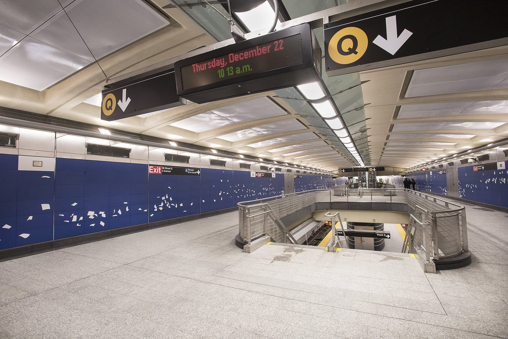
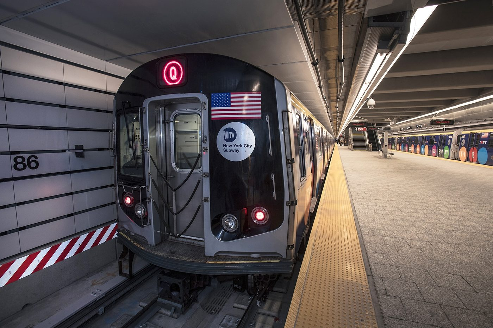
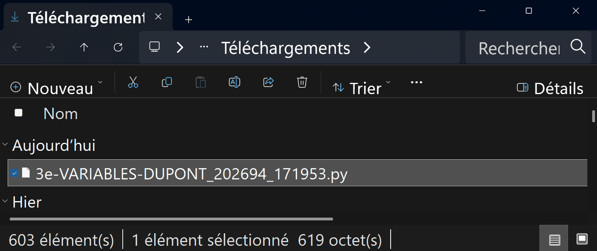
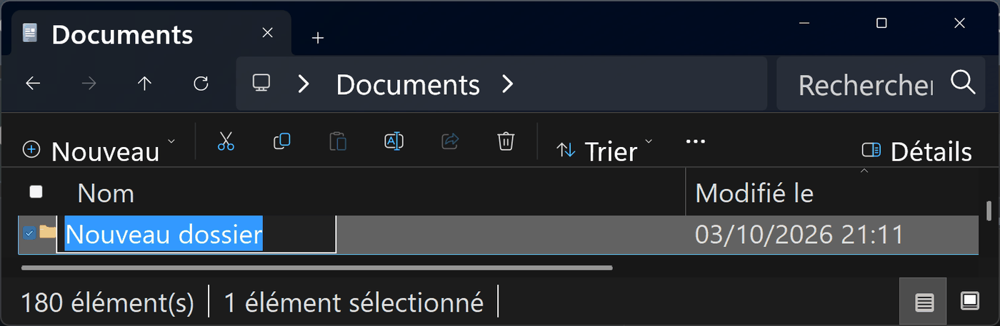
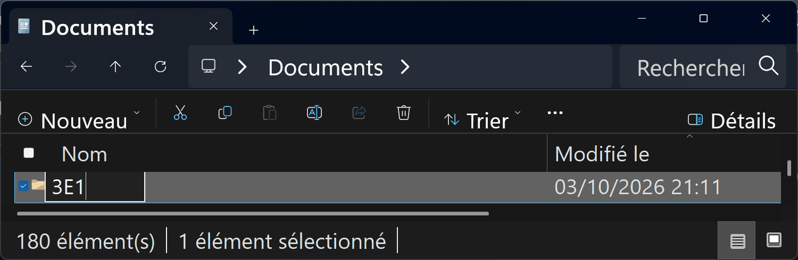
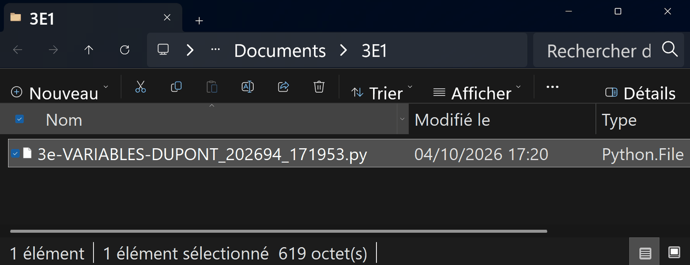

Le panneau du quai 96 St affiche n'importe quoi — répare le programme, et deviens celui ou celle qui COMPREND les variables
🖥️ Ordinateur partagé (salle de techno, CDI) : un autre élève qui ouvre cette page sur la même session verra tes réponses.
Quand tu as fini : imprime en PDF si tu veux garder une trace, puis clique sur « 🗑 Effacer ma sauvegarde ».
Parcours affiché : tous.
Pour toi, sans note : coche ce qui est déjà en place. Sous chaque ligne, un lien pour le reprendre si tu n'en es pas sûr·e.
→ pas encore sûr·e ? relis la partie 1 de la synthèse 4e_C9.1 à C9.3, « Comment dessiner une décision avant de l'écrire ? »
→ pas encore sûr·e ? relis la partie 3 de la synthèse 4e_C9.1 à C9.3, « Comment l'algorithme devient-il un programme ? »
→ pas encore sûr·e ? relis la partie 4 de la synthèse 4e_C9.1 à C9.3, « Comment prouver que le programme décide juste ? »
Dans cette séquence : on regarde dans la boîte.
Toutes les variables ne se valent pas.
Un nombre entier, un nombre à virgule, un texte, un vrai-ou-faux : chacun se range à sa façon, et réagit à sa façon.
C'est ce qui explique une bonne part des bogues de débutant.
Un mot à garder en tête : une variable porte un nom et contient une valeur qu'on peut changer en cours de programme.
| Code | Je serai capable de… | Où elle se travaille ici |
|---|---|---|
| 3e_C9.1 | Élaborer ou concevoir un algorithme permettant de répondre au besoin visé, puis le traduire en un programme structuré (appel de sous-programmes ou de fonctions), le tester et le mettre au point. | Activité 5 — c'est là que la compétence se joue entièrement : tu élabores l'algorithme du capteur d'air, tu le traduis en une fonction (le « programme structuré » du référentiel), tu la testes au banc, et tu la mets au point après avoir trouvé le défaut de frontière. Les activités 1 à 4 la préparent : on n'élabore pas un programme quand on croit encore que = veut dire « égal ». |
Quatre verbes dans une seule compétence — élaborer, traduire, tester, mettre au point.
C'est le sommet du cycle, et c'est pour cela que l'atelier est long : chacun demande son moment.
| Niveau | Le verbe | Ce qu'on me fournit |
|---|---|---|
| 5e_C9.1 | analyser un programme simple fourni et le tester | tout : le programme existe, il fonctionne |
| 5e_C9.2 | modifier un programme fourni | le programme, à retoucher |
| 4e_C9.1 | modifier un algorithme | l'algorithme, amputé d'une exigence |
| 4e_C9.2 | traduire un algorithme en programme | l'algorithme complet |
| 3e_C9.1 | élaborer, traduire, tester, mettre au point | rien que le besoin |
| 3e_C9.2 | réaliser et mettre au point, avec interaction humain-machine | rien que le cahier des charges |
Lis la dernière colonne de haut en bas : on retire progressivement ce qu'on donne.
La difficulté du cycle ne tient pas à des programmes plus longs — elle tient à ce qui manque au départ.
En 3e, il ne reste que le besoin, et c'est à toi de fabriquer tout le reste.
Référence normative : programme de technologie du cycle 4, BO n°9 du 29 février 2024.
Codification opérationnelle : les codes 3e_C9.1 · 3e_C9.2 · 4e_C9.1 · 4e_C9.2 · 5e_C9.1 · 5e_C9.2 servent à ranger les séquences ; ils ne viennent pas du programme officiel.
Le mode essentiel masque les corrections et les compléments : il ne reste que les consignes et les exercices.
Cet atelier s'appuie sur des notions de 5e et de 4e.
Trois questions pour savoir, toi comme le professeur, sur quoi on peut s'appuyer.
Elles ne comptent pas dans ta progression et ne sont pas notées — « je ne sais pas » est une réponse utile.
New York, station 96th Street, 7 h 42.
Sur le quai, le panneau lumineux annonce :
« Train Q — 412 min ».
Quatre cent douze minutes ?! Les voyageurs rient, la MTA
(le métro new-yorkais) beaucoup moins.
Le stagiaire qui a modifié le programme du panneau
est reparti en laissant un code plein de bugs.
Ton collège est jumelé avec une classe de Manhattan, et leur professeur vous met au défi :
« Nos élèves n'ont pas trouvé les bugs.
Vos élèves de Martinique feront-ils mieux ? »
Pour gagner, il faut d'abord maîtriser une notion qui réserve encore des surprises :
la variable.
Puis ses types. Puis la mise au point —
l'art de prouver qu'un programme marche VRAIMENT.

La ligne Q — de la 96e Rue à la plage de Coney Island
Plan simplifié, non à l'échelle — comme tous les plans de métro du monde. À Brooklyn, toutes les stations ne sont pas dessinées.
🚇 La ligne Q en bref
🔎 À toi de lire le plan
① Combien de stations entre 96 St et Times Square ?
② Si le panneau dit « Q — 3 min », dans combien de temps peux-tu être à la plage ?
Indice : le trajet dure environ 50 min.
Question 1 — combien de stations entre 96 St et Times Square ?
Méthode : pose ton doigt sur le repère 📍 (96 St), fais-le glisser le long du trait jaune, et compte CHAQUE point rencontré — sans compter la station de départ :
86 St → 1
72 St → 2
Lexington Av–63 St → 3
57 St–7 Av → 4
Times Sq–42 St → 5
Réponse : Times Square est la 5e station après la nôtre (on peut aussi dire : 4 stations intermédiaires, puis l'arrivée). Remarque de pro : c'est possible parce que la Q est express dans Manhattan — en local, il y aurait plus d'arrêts.
Question 2 — le panneau dit « Q — 3 min » : dans combien de temps peux-tu être à la plage ?
Étape 1 — comprendre le panneau : « 3 min » = le temps d'ATTENTE avant que le train arrive au quai.
Étape 2 — lire l'indice du plan : le TRAJET complet 96 St → Coney Island dure environ 50 min.
Étape 3 — poser l'addition : temps total = attente + trajet = 3 + 50 = 53 minutes.
Étape 4 — répondre par une phrase : « Je peux avoir les pieds dans le sable dans environ 53 minutes, un peu moins d'une heure. »
Pourquoi « environ » (le signe ≈) ? Parce qu'un trajet réel varie — affluence, arrêts prolongés… Donner un résultat avec la précision QUI CONVIENT AU BESOIN, c'est déjà l'esprit de la mise au point que tu vas pratiquer dans cet atelier.

Comment élaborer un algorithme, le traduire en un programme structuré, puis le tester et le mettre au point — sans se faire piéger par ses propres variables ?
Le niveau attendu est exactement le même qu'avec la consigne libre : ces débuts de phrases retirent l'obstacle de la rédaction, pas l'exigence.
🅱 En simulation : l'éditeur Python est dans la page, à chaque activité qui fait programmer.
Tu écris ton programme au clavier, tu cliques ▶ Exécuter : la console est en dessous.
C'est le parcours principal.
Cherche les éditeurs 🐍 dans les séances 2, 3 et 4.
Vittascience reste possible, par un lien, si tu préfères.
🅲 Sans matériel : tu t'appuies sur deux activités de la séance 1.
① Activité 1 : le simulateur de mémoire, avec le bouton « ▶ Étape suivante ».
② Activité 2 : les tables de suivi, à refaire au cahier.
Cinq activités, réparties sur quatre séances. Une case se coche quand l'activité est validée — pas quand elle est commencée.
Question directrice : que se passe-t-il RÉELLEMENT dans la mémoire quand un programme s'exécute ?
La variable : une BOÎTE ÉTIQUETÉE dans la mémoire
1️⃣ Le programme
1 train = "Q" 2 minutes = 4 3 minutes = minutes - 1 4 print(train, minutes)
2️⃣ La mémoire : des boîtes étiquetées
train "Q"
minutes 43
Ligne 3 : le 4 est REMPLACÉ par 3.
Par le nom minutes, on ne retrouve plus le 4.
L'ÉTIQUETTE ne change jamais ; le CONTENU, si.
3️⃣ Le panneau du quai
Q · 3 min
96 St — direction Manhattan
minutes = minutes - 1 se lit DE DROITE À GAUCHE : je calcule d'abord, puis je range le résultat dans la boîte.🔎 À toi de lire : après la ligne 3, que contient chaque boîte ? Et que va afficher la ligne 4 ?
🎨 Lis le code en couleurs : variables · "textes" · nombres · mots-clés · = et opérateurs
Avant l'exécution : la mémoire est vide. Clique ▶ Étape suivante.
Après l'exécution complète, réponds :
Regarde le simulateur : à la ligne 4, la boîte minutes a-t-elle DEUX valeurs, ou une seule ? Une boîte ne contient jamais qu'UNE valeur à la fois.
Pour la question 4 : Python commence par calculer TOUT ce qui est à droite du = (il lit minutes, trouve 4, calcule 4 − 1 = 3).
Ce n'est qu'À LA FIN qu'il range le résultat dans la boîte de gauche.
C'est pour ça que la même variable peut être des deux côtés sans contradiction.
1. 3 — le calcul 4 − 1 est rangé dans la boîte.
2. Il est perdu : affecter,
c'est remplacer le contenu ; l'ordinateur n'a pas de corbeille pour les anciennes valeurs.
3. « Mets cette valeur dans la boîte » — c'est le sens le plus important de tout l'atelier :
en Python, = n'est PAS le égal des maths (le égal de comparaison s'écrit ==).
4. De droite à gauche — calcule d'abord, range ensuite.
Erreur classique : lire x = x + 1 comme une équation (« impossible, x ne peut pas
être égal à x+1 ! »). Ce n'est pas une équation : c'est un ORDRE donné à la mémoire.
= signifie « range dedans » — et il REMPLACE ce qui s'y trouvait.🎯 Critère de réussite : je peux dire ce que contient chaque boîte après CHAQUE ligne, sans exécuter.
👥 Qui fait quoi — et quand on échange
Deux rôles seulement, et on échange à la moitié du temps. Un rôle est un tour, pas une étiquette.
| Rôle | 1re moitié | 2e moitié |
|---|---|---|
| Pilote | ||
| Vérificateur |
À recopier à chaque séance.
Si personne ne change de rôle, c'est
toujours le même qui apprend à tenir le clavier — et ce n'est pas celui qui en avait le
plus besoin.
1 passages = 0 2 groupe = 3 3 passages = passages + groupe 4 groupe = groupe - 1 5 passages = passages + groupe
Fais ta table au brouillon : deux colonnes (passages, groupe), une ligne par ligne de programme. Remplis case par case, sans sauter.
Ligne 3 : à droite, passages + groupe = 0 + 3 = 3 → je range 3 dans passages.
Ligne 4 : groupe - 1 = 3 − 1 = 2 → dans groupe.
Ligne 5 : 3 + 2 = 5 → dans passages.
La table ne ment jamais.
Table de suivi :
ligne 1 → passages = 0
ligne 2 → groupe = 3
ligne 3 → passages = 3
ligne 4 → groupe = 2
ligne 5 → passages = 5.
La boîte passages a changé 3 fois (0, puis 3, puis 5).
Le programme accumule : c'est le motif « compteur », le plus utile de toute la programmation
(points d'un jeu, voyageurs d'une station, mesures d'un capteur…).
Erreur classique : répondre 6 à la ligne 5 en utilisant l'ANCIEN groupe (3) — la table de suivi t'oblige à utiliser la valeur COURANTE (2). C'est exactement pour ça qu'elle existe.
🎯 Critère de réussite : ma table donne la même chose que l'ordinateur — vérifie-le en recopiant le programme dans l'éditeur de la séance 2 !
L'éditeur Python est dans la page, à chaque activité qui fait écrire un programme : rien à ouvrir, rien à installer, et il marche sans Internet.
Entraîne-toi d'abord ici, sur un petit programme d'essai : l'éditeur d'essai, à côté des gestes (dessous, sur un petit écran), est un vrai, le même que dans l'activité 3.
Fais les quatre gestes dans l'ordre : chacun se coche quand il est réussi.
Ensuite, dans l'activité 3, tu referas les mêmes avec ton vrai programme, et il ne se perdra pas — ni pendant la séance, ni la semaine suivante.
Camille par ton prénom (garde les guillemets), puis clique ▶ Exécuter. Tab décale de 4 espaces.Ce que tu dois voir : dans la console, « Bonjour », ton prénom, puis « 2 + 3 = 5 », puis « ✔ Terminé ».
La première fois, Python met une seconde à se préparer.
Et si tu te trompes ? Efface un guillemet, puis ▶ : la console explique l'erreur, et sa ligne est marquée dans la marge.
Remets le guillemet. ⏹ Arrêter interrompt un programme qui tourne sans fin.
TON NOM par ton nom : 3e-VARIABLES-essai-DUPONT. Ce que tu dois voir : ton nom dans le champ, juste avant « .py ».
DUPONT est un exemple : mets ton nom.
Ce que tu dois voir : sous les boutons, la phrase « ⬇ … part dans ton dossier Téléchargements », puis, dans l'Explorateur, ton fichier dans Documents › 3E1 (ta classe).
Ce que tu dois voir : ton prénom revient dans le programme, et sous les boutons, « 📂 … est ouvert : ton programme est revenu dans l'éditeur ».
Tu l'as cherché là où tu l'avais rangé : c'est tout le secret.
Pas de bouton ▶ Exécuter sous la zone (JavaScript coupé, page imprimée) ? Lis les quatre gestes : tu les feras dans l'activité 3, avec le lien Vittascience.
Ouvre l'Explorateur de fichiers (le dossier jaune de la barre des tâches, ou les touches Windows + E), clique Téléchargements, clique ton fichier une fois, puis Ctrl + X.
Va dans Documents, entre dans le dossier de ta classe (exemple : 3E1), puis Ctrl + V.
Si ce dossier n'existe pas encore, crée-le d'abord : dans Documents, Nouveau → Dossier, tape le nom de ta classe, puis Entrée.

.py dans Téléchargements. Clique-le une fois, puis Ctrl + X pour le couper. 3e-VARIABLES-act3-DUPONT). 


.py. Au geste 4, la fenêtre « Ouvrir » est celle de ton poste : Documents est dans sa colonne de gauche, et le dossier de ta classe dedans — le même chemin qu'ici.
Le lien « Vittascience, si tu préfères » ouvre son éditeur en mode code : efface print('Bonjour !'), écris, Exécuter → le crayon, 3e-VARIABLES-TON NOM → la disquette, Télécharger → Téléchargements → Documents › ta classe.
Pour reprendre : 📂 Ouvrir mon .py dans la page (son en-tête est retiré), puis Ctrl + A, Ctrl + C ici et Ctrl + A, Ctrl + V là-bas — son « Ouvrir → Depuis votre appareil » remettrait print('Bonjour !').
Question directrice : pourquoi le panneau affiche-t-il « 412 min » — et quel rapport avec des guillemets ?
🌐 Sans connexion, tout se fait dans la page : l'éditeur Python est intégré à l'activité. Seul le lien « Vittascience, si tu préfères » demande Internet.
Que peut-on faire avec une valeur ? Ça dépend de son TYPE.
int
nombre ENTIER
Exemples 4 -2 96
Essaie 4 + 1 donne 5
✔ on peut CALCULER avec (+ − × ÷) et comparer
float
nombre À VIRGULE
Exemples 3.5 20.8
Essaie 3 + 4.5 donne 7.5
⚠ la virgule s'écrit avec un POINT : 3.5, jamais 3,5
str
TEXTE (chaîne de caractères)
Exemples "Q" "96 St" "34"
Essaie "Q" + "96" donne "Q96"
⚠ entre guillemets = TEXTE, même si ce sont des chiffres !
bool
VRAI ou FAUX
Exemples True False
Essaie 4 > 3 donne True
le résultat d'un test, comme retard > 5
🎯 Le piège des guillemets — la même touche +, trois effets
5 + 5int + int → le + ADDITIONNE10"5" + "5"str + str → le + COLLE (concaténation)"55""5" + 5str + int → impossibleerreur de typeÀ retenir : avant de calculer, demande-toi TOUJOURS « quel est le TYPE de cette valeur ? »
Un doute ? type(x) te répond — et int("34") transforme le texte en nombre.
🔎 À toi de prédire : que donne "1" + "2" ? Et int("1") + int("2") ? Vérifie ensuite dans l'éditeur.
Expérience A : print(3 + 4)
Expérience B : print("3" + "4")
Expérience C : print("Train " + "Q", 2 + 1, "min")
🅲 Sans matériel : l'éditeur ci-dessous est dans la page et marche sans Internet — exécute quand même les trois expériences (▶) : c'est ce qui enregistre ton passage.
Sur papier, écris-les au cahier et reporte les résultats donnés par la correction de l'activité.
Clique ▶ Exécuter : la console affiche une ligne par expérience, dans l'ordre A, B, C. Tu peux aussi les essayer une par une, ou en inventer d'autres.
Avec Vittascience (facultatif, Internet nécessaire) : Vittascience, si tu préfères — il s'ouvre dans un autre onglet ; ses gestes sont écrits à la fin de l'échauffement.
Pas de bouton ▶ Exécuter sous la zone (JavaScript coupé, page imprimée) ? Écris ton programme dans la zone ci-dessus ou sur ton cahier, puis exécute-le dans Vittascience, par le lien.
③ Je reporte ce que la console a affiché :
Regarde le document 2 : la carte str dit « entre guillemets = TEXTE, même si ce sont des chiffres ». Que fait + avec deux textes ?
Si l'éditeur ne démarre pas, applique la règle du document 2.3 + 4 : deux int, donc addition — le résultat est 7."3" + "4" : deux str, donc collage — le résultat est "34".
Puis reporte ces valeurs.
A : 7 (int + int = addition).
B : 34 — pas « trente-quatre » : le TEXTE « 34 »,
les deux caractères collés (concaténation).
C : Train Q 3 min — "Train " + "Q"
colle les textes, 2 + 1 additionne les nombres, et la virgule de print
insère les espaces.
Conclusion : le + colle les str, additionne les int/float.
Le bug :
"4" + "1" donne "41" → « 41 min ».
Avec « 412 min », le stagiaire avait collé
« 4 », « 1 » et « 2 »…
Erreur classique : croire que "5" et 5 sont pareils « puisque c'est
le même chiffre ». Pour l'ordinateur, l'un se calcule, l'autre s'affiche. int("5")
fait passer du texte au nombre — c'est le décodeur.
3 + 4.5 donne 7.5. "3" + 4 déclenche une erreur de type. type(x).🎯 Critère de réussite : je peux prédire le résultat de x + y rien qu'en regardant les guillemets.
Question directrice : sauras-tu trouver les TROIS bugs que la classe de Manhattan a manqués ?
🌐 Sans connexion, tout se fait dans la page : l'éditeur Python est intégré à l'activité. Seul le lien « Vittascience, si tu préfères » demande Internet.
1 train = "Q" 2 quai = "96 St" 3 minutes = "2" + "1" 4 temperature_f = 77 5 temperature_c = (temperature_f - 32) / 1,8 6 message = train + " - " + quai 7 minutes = minutes - 1 8 print(message, minutes, "min |", temperature_c, "C")
🔎 Bug n°1 — les minutes fantômes.
🔎 Bug n°2 — la virgule qui trompe. Attention : pour celui-ci, Python n'affiche aucune erreur.
🔎 Bug n°3 — le calcul impossible. Avec la ligne 3 d'origine, le programme s'arrête à la ligne 7 sur une erreur.
🅲 Sans matériel : l'éditeur est dans la page — corrige et exécute le programme (▶).
Sur papier, recopie le programme corrigé au cahier ligne à ligne, et vérifie ta ligne 8 avec la correction complète.
Exécute-le d'abord tel quel : la console t'explique la première erreur, en français, et sa ligne.
Corrige UN bug à la fois et réexécute à chaque fois — le bug n°2 ne fait aucune erreur : seule la sortie le trahit.
C'est ton badge d'exécution : la vérification de l'activité demande une exécution menée jusqu'au bout.
Avec Vittascience (facultatif, Internet nécessaire) : Vittascience, si tu préfères — il s'ouvre dans un autre onglet ; ses gestes sont écrits à la fin de l'échauffement.
Pas de bouton ▶ Exécuter sous la zone (JavaScript coupé, page imprimée) ? Écris ton programme dans la zone ci-dessus ou sur ton cahier, puis exécute-le dans Vittascience, par le lien.
Bug 1 : séance 2, expérience B. Bug 2 : document 2, carte float — Python ne t'avertira pas, cherche un nombre décimal mal écrit.
Bug 3 : quel est le TYPE de minutes après la ligne 3 d'origine ?
Chasse aux bugs méthodique :
① je tiens la table de suivi avec les TYPES (minutes : str "21" ← alerte !) ;
② je repère les opérations impossibles (str − int) ;
③ je corrige UNE chose à la fois et je réexécute à chaque fois. Un bug corrigé peut en révéler un autre — c'est normal, c'est la mise au point.
Bug 1 : ligne 3, "2" + "1" colle les textes → "21" ;
correction :
minutes = 2 + 1.
Bug 2 : ligne 5, 1,8 — en Python la virgule sépare des
éléments, elle ne fait pas les décimales ;
correction : 1.8.
Bug 3 : avec la ligne 3
d'origine, minutes est un TEXTE, et "21" - 1 déclenche une erreur de type
(TypeError) — on ne soustrait pas un nombre d'un texte.
Programme corrigé : minutes = 3 puis 3 − 1 = 2,
(77 − 32)/1.8 = 25.0 → la console affiche Q - 96 St 2 min | 25.0 C.
Pourquoi pas de tiret avant le 2 ? print sépare ce qu'on lui donne par de simples
espaces ; le seul tiret vient de message, entre « Q » et « 96 St ».
Pourquoi le bug 2 ne se voit pas tout seul ? Avec 1,8, Python ne signale rien : il lit
deux valeurs séparées par la virgule, (77 − 32) / 1 et 8, et la température devient
(45.0, 8).
Le panneau afficherait « (45.0, 8) C » : seul un test le révèle.
Erreur classique : corriger le bug 1 et s'arrêter là parce que « ça a l'air bon » — sans exécuter, le bug 2 attend tranquillement la ligne 5. On ne déclare jamais un programme réparé sans l'avoir RÉEXÉCUTÉ en entier.
🎯 Critère de réussite : mon programme corrigé affiche exactement Q - 96 St 2 min | 25.0 C dans la console.
Question directrice : comment PROUVER qu'un programme répond au besoin — et pas seulement qu'il « a marché une fois » ?
🌐 Sans connexion, tout se fait dans la page : l'éditeur Python est intégré à l'activité. Seul le lien « Vittascience, si tu préfères » demande Internet.
Du besoin au programme TESTÉ — la ventilation de la station 96 St
1️⃣ Élaborer — l'algorithme, en français
J'écris d'abord l'ALGORITHME : les variables dont j'ai besoin, les conditions, dans le bon ordre.
Lire la qualité de l'air (un indice de simulation).
SI air > 100 (pollué) → ventiler À FOND (3)
SINON SI un train arrive → ventiler MOYEN (2)
SINON → ventiler DOUCEMENT (1)
…et on recommence, sans fin.
L'ordre compte : la pollution passe avant le train.
2️⃣ Traduire — le programme structuré
Une fonction par tâche, qui reçoit des variables et renvoie un résultat.
def vitesse_ventilation(air, train_arrive):
if air > 100:
return 3
elif train_arrive:
return 2
else:
return 1
Elle REÇOIT des variables (air, train_arrive) et RENVOIE un résultat : on peut l'appeler mille fois.
3️⃣ Mettre au point — le banc de tests
Je TESTE avec un banc écrit À L'AVANCE : cas normaux ET cas limites.
| air | train | attendu | obtenu |
|---|---|---|---|
| 150 | non | 3 | 3 ✔ |
| 60 | oui | 2 | 2 ✔ |
| 40 | non | 1 | 1 ✔ |
| 100 | non | ? | 1 ⚠ |
⚠ Le CAS LIMITE : 100, c'est pollué ou pas ? air > 100 dit NON.
C'est le CAHIER DES CHARGES qui tranche — puis on corrige (>=), et on REJOUE TOUS les tests.
Un programme n'est pas fini quand il « marche une fois » : il est fini quand il passe TOUS les tests.
La vraie ventilation du métro de New York brasse l'air de 472 stations — et son programme a, lui aussi, commencé par un algorithme.
① La traduction — complète la fonction :
def vitesse_ventilation(air, train_arrive):
if air ▢1 100:
return ▢2
elif train_arrive:
return 2
else:
return ▢3
air > 100 — pas encore la tienne : elle passe au banc à l'étape ④.| Test | air | train_arrive | Attendu (besoin) | Obtenu | |
|---|---|---|---|---|---|
| T1 — heure de pointe polluée | 150 | False | 3 | — | |
| T2 — un train approche | 60 | True | 2 | — | |
| T3 — nuit calme | 40 | False | 1 | — | |
| T4 — LE CAS LIMITE | 100 | False | ? | — |
③ Tranche le cas limite : à 100 pile, le besoin ne disait rien.
La MTA précise : « à 100 exactement, l'air est déjà trop pollué : il faut ventiler à fond ».
Le besoin se précise : la fonction doit suivre.
Complète la fonction (avec >=) : pour l'instant, elle renvoie 0.
À chaque ▶ Exécuter, la console affiche tes print(…), et la page teste ta fonction dans le tableau ci-dessous.
Avec Vittascience (facultatif, Internet nécessaire) : Vittascience, si tu préfères — il s'ouvre dans un autre onglet ; ses gestes sont écrits à la fin de l'échauffement.
Pas de bouton ▶ Exécuter sous la zone (JavaScript coupé, page imprimée) ? Écris ton programme dans la zone ci-dessus ou sur ton cahier, puis exécute-le dans Vittascience, par le lien.
🧪 Le banc de TA fonction : ce qu'elle RENVOIE, comparé au besoin.
Prévois T5, T6 et T7 avant d'exécuter.
| Test | air | train_arrive | Attendu (besoin) | Obtenu (ta fonction) |
|---|---|---|---|---|
| T1 | 150 | False | 3 | — |
| T2 | 60 | True | 2 | — |
| T3 | 40 | False | 1 | — |
| T4 — frontière | 100 | False | 3 | — |
| T5 — juste en dessous | 99 | False | à prévoir | — |
| T6 — juste au-dessus | 101 | False | à prévoir | — |
| T7 — deux conditions | 150 | True | à prévoir | — |
Ce tableau se remplit quand tu exécutes ta fonction dans l'éditeur Python.
▢1 : « pollué » = l'indice DÉPASSE 100. ▢2 : « à fond », c'est la plus grande vitesse.
Pour le T4 : 100 > 100, c'est vrai ou faux ?
Un banc de tests s'écrit AVANT de croire le programme fini : un test par cas du besoin + un test par FRONTIÈRE (ici, exactement 100).
Si le besoin dit « à partir de 100 », la condition est >=.
Et après toute correction, on rejoue tout : une correction peut casser ailleurs (c'est la non-régression, comme au jardin connecté de 4e).
① if air > 100: return 3 / else: return 1 — et une fonction parce
qu'elle se REJOUE et se teste à volonté.
② T1→3 ✔, T2→2 ✔, T3→1 ✔, T4→1 : avec
>, 100 n'est pas « supérieur à 100 », donc la station ventile doucement dans un air
déjà pollué.
③ Correction >=, puis on REJOUE LES QUATRE TESTS : T1, T2, T3 doivent
toujours passer (non-régression) et T4 renvoie désormais 3.
Deux conditions vraies — air à 150 ET un train qui arrive : 3.
Le besoin dit « air pollué → à fond ; SINON, train qui arrive » : la pollution passe avant.
Dans la fonction, le premier test vrai gagne : if air >= 100 est lu avant elif train_arrive.
Pas 2 : le elif n'est lu que si le premier test est faux.
Pas 5 : une fonction ne renvoie qu'une valeur, elle n'additionne pas deux vitesses.
Pas une erreur : deux conditions vraies ne gênent pas Python.
④ Ta fonction, dans l'éditeur :
def vitesse_ventilation(air, train_arrive):
if air >= 100:
return 3
elif train_arrive:
return 2
else:
return 1
Les 7 appels de la page :
T1 (150, False) donne 3.
T2 (60, True) donne 2.
T3 (40, False) donne 1.
T4 (100, False) donne 3.
T5 (99, False) donne 1 : juste sous la frontière, l'air n'est pas encore pollué.
T6 (101, False) donne 3 : juste au-dessus.
T7 (150, True) donne 3 : la pollution passe avant le train.
Un banc ne prouve que les cas qu'il essaie : on choisit donc les frontières (99, 100, 101) et le cas où deux conditions sont vraies.
Le besoin a-t-il été mal traduit ? Non. Avec « indice > 100 », la première fonction suivait le besoin écrit.
C'est le test à la frontière qui a posé la question, et la MTA y a répondu : le besoin s'est précisé, la fonction a suivi.
Erreur classique : écrire air = 100 dans la condition — un seul =
AFFECTE (il remplirait la boîte !), c'est == qui compare. Python te sauvera par une
erreur… mais pas dans tous les langages.
🎯 Critère de réussite : ma fonction réussit les 7 tests de la page.
Je sais expliquer pourquoi on rejoue tout après une correction.
🌐 Sans connexion, tout se fait dans la page : l'éditeur Python est intégré à l'activité. Seul le lien « Vittascience, si tu préfères » demande Internet.
Trois défis ouverts, sans vérificateur — pour le plaisir d'aller plus loin :
🗽 Défi convertisseur :
① Dans l'éditeur Python ci-dessous, écris miles_vers_km(d) (1 mile = 1.609 km) et fahrenheit_vers_celsius(t).
② Convertis un marathon de New York (26.2 miles) et la canicule de juillet (98 °F).
Bonus du bonus : écris ton banc de tests AVANT les fonctions.
🎫 Défi MetroCard : une carte coûte 1 $, chaque trajet 2.90 $.
① Écris prix_total(nb_trajets).
② Ajoute la règle « au-delà de 12 trajets par semaine, les suivants sont gratuits ».
③ Quels cas limites ton banc de tests doit-il couvrir ?
👨👩👧 Défi famille :
① Prends trois vraies boîtes de cuisine, étiquetées train, minutes, quai, et des papiers comme valeurs.
② Fais exécuter le programme de l'activité 1 à quelqu'un de ta famille : toi, tu joues le processeur qui lit les lignes.
S'il comprend pourquoi l'ancien papier va à la poubelle, vous avez gagné tous les deux.
Le départ est celui du défi convertisseur ; efface-le pour un autre défi. Ton programme est gardé dans la page.
Avec Vittascience (facultatif, Internet nécessaire) : Vittascience, si tu préfères — il s'ouvre dans un autre onglet ; ses gestes sont écrits à la fin de l'échauffement.
Pas de bouton ▶ Exécuter sous la zone (JavaScript coupé, page imprimée) ? Écris ton programme dans la zone ci-dessus ou sur ton cahier, puis exécute-le dans Vittascience, par le lien.
🔁 Retour sur ton hypothèse de départ (« où va l'ancien 4 ? ») :
Le niveau attendu est exactement le même qu'avec la consigne libre.
= ne veut pas dire ____ , il veut dire ____ .🚦 Je me positionne (🔴 pas encore · 🟡 avec aide · 🟢 seul·e · ⭐ je peux l'expliquer) :
🧭 Et après ? Le TP mBot2 en Python fait rouler tes variables
sur un vrai robot, au collège (très basse tension).
L'atelier de 4e sur l'arrosage du jardin connecté en est plein :
ouvre-le, tu y verras des variables partout, maintenant que tu sais les voir.
Le QCM de l'atelier t'attend : 30 questions (dont 3 illustrées), réparties en
4 familles — variables, types, lecture de programme, mise au point.
Corrections détaillées,
réfutation de chaque piège, sauvegarde automatique : le meilleur thermomètre avant l'évaluation.